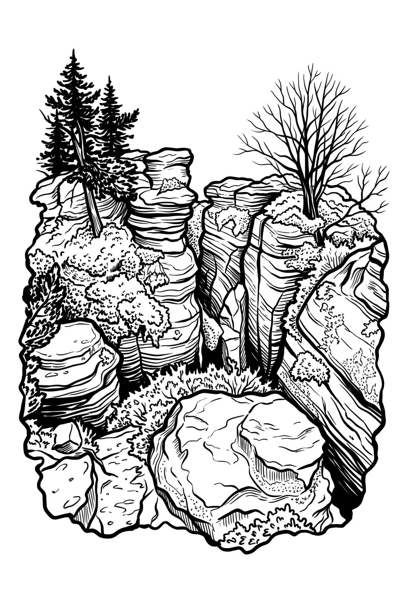

Tiské stěny
Ústecký kraj · 613 m n. m.

přírodní památka · #081
Tiské stěny jsou pískovcové skalní město a přírodní památka poblíž obce Tisé v okrese Ústí nad Labem. Jsou ojedinělé svou rozlohou i rozličností skalních útvarů. Obec Tisá se nalézá blízko hraničního přechodu Petrovice na česko-saské hranici. Dopravně jde o lehce dostupnou lokalitu, protože poblíž vede dálniční koridor Praha–Drážďany.